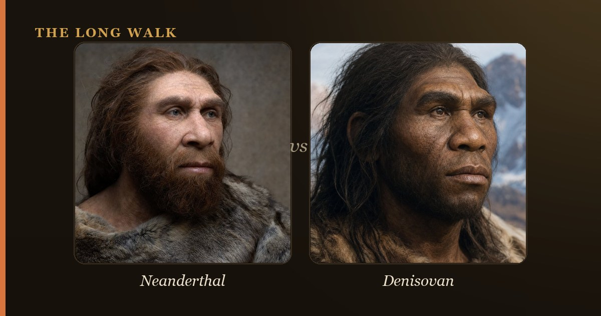

Neanderthals vs Denisovans compares two sister groups that split roughly 400,000 years ago. Neanderthals lived from western Europe to the Altai and are known from hundreds of fossils. Denisovans were first identified in 2010 from the DNA of a finger bone in Siberia’s Denisova Cave, and only a handful of fossils are known, from Siberia, Tibet, northern China and Taiwan. Both interbred with modern humans: most non-Africans carry about 2% Neanderthal DNA, and some Asian and Oceanian peoples carry Denisovan DNA too.

The bone was smaller than a fingernail: the tip of a little finger, dug out of Denisova Cave in the Altai Mountains in 2008. In 2010, geneticists in Leipzig sequenced its DNA and found a human lineage nobody had seen before. It belonged to a girl. The group she came from was named the Denisovans, after the cave, and for years almost nothing else about them was known.
Neanderthals came the other way round. A skull cap and leg bones from the Feldhofer Cave in Germany’s Neander Valley turned up in 1856. By the time their DNA was sequenced, scientists had studied Neanderthal skeletons for 150 years. So Neanderthals vs Denisovans is not a fair contest of equals. One is a body of anatomy with genes added. The other is a genome slowly getting a body.
Neanderthals vs Denisovans: two ways of knowing a species
For Neanderthals, we can say how tall they were (men averaged about 1.65 m), how their ribcages flared, how their skulls were long and low with a bulge at the back, and what injuries they survived. Several high-quality genomes, from the Altai, Vindija in Croatia and Chagyrskaya in Siberia, add family structure and population size.
For Denisovans the order is reversed. The genomes from Denisova Cave came first and showed a population distinct from both Neanderthals and modern humans. The fossils are few and fragmentary:
- Denisova Cave, Siberia: the finger bone, several very large molars and a skull fragment.
- Baishiya Karst Cave, Tibetan Plateau: the Xiahe jaw, at least 160,000 years old, identified as Denisovan in 2019 from ancient proteins. A Denisovan rib from the same cave is much younger, between about 48,000 and 32,000 years old.
- Harbin, northern China: a near-complete skull at least 146,000 years old, linked to Denisovans in 2025 by its proteins and by mitochondrial DNA recovered from dental plaque. It was earlier named Homo longi; see our Dragon Man article.
- Penghu, Taiwan: a robust male jaw dredged from the seabed, identified from proteins in 2025. Its age is uncertain.
Together these show heavy jaws, big teeth and a large, low skull. That is enough to say Denisovans did not look like Neanderthals, but not enough to describe a Denisovan body.
A shared ancestor, then a split
Genomes put the separation of the Neanderthal–Denisovan line from our own at roughly 550,000 to 765,000 years ago, and the split between Neanderthals and Denisovans at about 400,000 years ago. These dates depend on the mutation rate assumed, so treat them as ranges.
A fossil from Spain sits close to the split. At Sima de los Huesos, about 430,000 years old, nuclear DNA from the bones is closer to Neanderthals, but the mitochondrial DNA is closer to Denisovans. The likely explanation is that mitochondria from an older population were later replaced in Neanderthals, possibly through gene flow from early modern humans. It is a reminder that a single DNA type can mislead.
The cave where they met
Denisova Cave holds both groups. Neanderthals and Denisovans used it at different times over more than 200,000 years. In 2018, a bone fragment called Denisova 11 turned out to belong to a girl at least 13 years old whose mother was a Neanderthal and whose father was a Denisovan. Her father also carried some Neanderthal ancestry from further back. Finding a first-generation offspring among so few sampled individuals suggests that mixing was not rare when the two groups met.
What each left in us
Most people with ancestry outside Africa carry about 2% Neanderthal DNA, and Africans carry smaller amounts brought back by later migrations. Denisovan ancestry is patchier. It is highest in Papua New Guinea, Australia and parts of the Philippines, where early estimates put it at several per cent of the genome. It is lower in mainland Asia and very low in Europe.
The Denisovan contribution also seems to come from more than one source. Statistical studies of Papuan and East Asian genomes find segments from at least two Denisovan populations that had been apart for a long time. One was closer to the Altai Denisovans than the other. The exact number of pulses is still debated.
Some inherited segments matter. A Denisovan version of the EPAS1 gene helps Tibetans live at high altitude without overproducing red blood cells. Neanderthal variants affect immune responses, skin and, in some cases, disease risk. Many others were weeded out because they were harmful. For a personal angle, see how much Neanderthal DNA you have and Denisovan DNA in modern humans.
A tooth from Laos
Denisovan teeth are distinctive. The molars from Denisova Cave are very large, with complex crowns, bigger than those of Neanderthals and later sapiens. That has helped researchers identify possible Denisovans where no DNA survives. In 2022, Fabrice Demeter and colleagues described a child's molar from Tam Ngu Hao 2, also called Cobra Cave, in Laos, dated to about 164,000 to 131,000 years ago. Its internal structure most closely resembled the Xiahe jaw, and the team argued it was probably Denisovan.
The identification is tentative. Ancient proteins from the tooth confirmed it belonged to the genus Homo and to a girl, but could not distinguish Denisovan from Neanderthal. If it is Denisovan, it places the group in tropical Southeast Asia, consistent with the high Denisovan ancestry in people of New Guinea and Australia today.
What we still can’t compare
Neanderthal behaviour is well documented: Mousterian stone tools made with prepared cores, hunting of large animals, use of fire, care of injured people and, at several sites, deliberate burial. For Denisovans, the record is thin. Stone tools at Denisova Cave and Baishiya show they made Middle Palaeolithic-style tools, and the rib site shows they butchered blue sheep, wild yak and other animals. Beads and polished stone from Denisova Cave were once credited to Denisovans, but the layers are mixed and the makers are uncertain.
Their ranges differ too. Neanderthals lived across western Eurasia from Iberia to the Altai. Denisovans reached Siberia, the Tibetan Plateau, northern China and Taiwan, and the DNA in Papuans and Filipinos suggests they lived somewhere in Southeast Asia as well. No Denisovan fossil has yet been found there.
| Evidence | Neanderthals | Denisovans |
|---|---|---|
| First identified | 1856, from bones | 2010, from DNA |
| Fossils | Hundreds of individuals, full skeletons | A few teeth, jaws, a rib, a finger and one skull |
| High-quality genomes | Several | One (Denisova 3) |
| Range | Iberia to the Altai | Siberia, Tibet, China, Taiwan; likely Southeast Asia |
| Known face | Yes, many | Harbin skull only |
| DNA in people today | ~2% outside Africa | Highest in Oceania and the Philippines |
The comparison is likely to look very different in ten years. Protein methods now let researchers identify Denisovans from bones too old or damaged for DNA, and museum collections across Asia are being re-examined. Some fossils already labelled as other species may turn out to be Denisovan.
See where Neanderthals and Denisovans branch from our shared ancestors on the interactive family tree, then follow how their genes spread on the migration map.
Explore the family tree →Neanderthals vs Denisovans FAQ
What is the difference between Neanderthals and Denisovans?
They are sister groups that split about 400,000 years ago. Neanderthals lived in western Eurasia and are known from many skeletons. Denisovans lived further east and are known mainly from DNA and a few fossils.
Did Neanderthals and Denisovans interbreed?
Yes. A girl from Denisova Cave, known as Denisova 11, had a Neanderthal mother and a Denisovan father. Her father also had some Neanderthal ancestry.
What did Denisovans look like?
Only partly known. Their jaws and teeth were large and robust, and the Harbin skull, linked to Denisovans in 2025, shows a big, long, low braincase and a broad face.
Who has the most Denisovan DNA today?
People in Papua New Guinea, Indigenous Australians and some groups in the Philippines carry the most. Mainland Asians carry less, and Europeans very little.
Are Denisovans a separate species?
They have no agreed formal species name. Some researchers now place them in Homo longi, based on the Harbin skull; others prefer to keep calling them Denisovans until more fossils are known.
- Reich, D. et al. (2010). 'Genetic history of an archaic hominin group from Denisova Cave in Siberia.' Nature 468. nature.com
- Slon, V. et al. (2018). 'The genome of the offspring of a Neanderthal mother and a Denisovan father.' Nature 561. nature.com
- Chen, F. et al. (2019). 'A late Middle Pleistocene Denisovan mandible from the Tibetan Plateau.' Nature 569. nature.com
- Meyer, M. et al. (2016). 'Nuclear DNA sequences from the Middle Pleistocene Sima de los Huesos hominins.' Nature 531. nature.com
- Huerta-Sánchez, E. et al. (2014). 'Altitude adaptation in Tibetans caused by introgression of Denisovan-like DNA.' Nature 512. nature.com
- Fu, Q. et al. (2025). 'Denisovan mitochondrial DNA from dental calculus of the >146,000-year-old Harbin cranium.' Cell. doi.org
- Demeter, F. et al. (2022). 'A Middle Pleistocene Denisovan molar from the Annamite Chain of northern Laos.' Nature Communications 13. doi.org